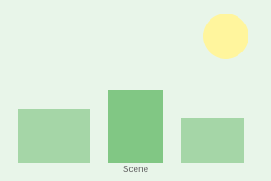

A Day in the City
Practice reading comprehension with stories about daily life.
At the Coffee Shop
Maria wakes up at seven o'clock every morning. She lives in a small apartment near the city center. First, she takes a shower and gets dressed. Then she eats breakfast - usually toast with butter and a cup of coffee.
At eight o'clock, Maria leaves her apartment and walks to work. On the way, she stops at her favorite coffee shop. The coffee shop is called "The Morning Bean." It is on the corner of Main Street and Park Avenue.
"Good morning, Maria!" says Carlos, the barista. He knows Maria because she comes every day. "The usual?" he asks.
"Yes, please," Maria replies. "A medium latte with oat milk."
Maria pays for her coffee and sits at a small table by the window. She likes to watch the people walking by. Some are going to work, like her. Others are walking their dogs or jogging in the park across the street.
At eight-thirty, Maria finishes her coffee and continues walking to her office. She works as a graphic designer at a small company. She enjoys her job because she can be creative every day.
| Word | Português | Example from text |
|---|---|---|
| apartment | apartamento | "She lives in a small apartment" |
| barista | barista | "Carlos, the barista" |
| corner | esquina | "on the corner of Main Street" |
| jogging | correndo (exercício) | "jogging in the park" |
| creative | criativo(a) | "she can be creative every day" |
Pre-reading activity: Ask students about their morning routines. What time do they wake up? Do they drink coffee or tea?
Reading strategy: Have students read silently first, then read aloud as a class.
Read each sentence. Write T (True) or F (False) based on the text.
Answer the questions in complete sentences.
What time does Maria wake up?
Maria wakes up at seven o'clock.Where is the coffee shop located?
The coffee shop is on the corner of Main Street and Park Avenue.Why does Carlos know Maria?
Carlos knows Maria because she comes every day.What does Maria like to do at the coffee shop?
Maria likes to watch the people walking by.Why does Maria enjoy her job?
Maria enjoys her job because she can be creative every day.Vocabulary Practice
Match each English word with its Portuguese translation. Write the letter in the box.
Number the sentences (1-6) in the correct order according to Maria's morning routine.
Fill in the blanks using words from the Word Bank. Each word is used once.
Maria lives in a small near the city center. Every , she stops at a shop on her way to work. She likes to sit by the and watch people. Maria works as a graphic .
Looking at Pictures
Places in the City

A. Coffee ShopLook at the picture and answer the questions.
What place is this?
This is a coffee shop.What can you buy here?
You can buy coffee, tea, and snacks.Do you like this place? Why or why not?
Write a short paragraph (4-6 sentences) about your morning routine. Use the text about Maria as an example.
Include: What time do you wake up? What do you eat for breakfast? How do you go to school or work?
Assessment criteria for Exercise 7:
- Uses correct present tense verbs
- Includes at least 4 sentences
- Mentions time, breakfast, and transportation
- Clear and coherent paragraph structure
Chapter 2 - Answer Key
Exercise 1: True or False
Exercise 2: Answer the Questions
Exercise 3: Match the Words
Exercise 4: Put in Order
(From top to bottom: walks to office=6, wakes up=1, stops at coffee shop=4, takes shower=2, sits by window=5, eats breakfast=3)
Exercise 5: Complete the Summary
Exercise 6: Describe the Picture
Sample answers:
Exercise 7: Write About Your Morning
Answers will vary. Check for correct present tense usage, 4+ sentences, and inclusion of time, breakfast, and transportation details.